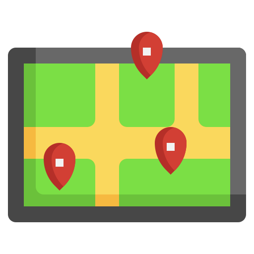

<link href="https://fonts.googleapis.com/css2?family=Chewy&display=swap" rel="stylesheet">

<ion-content>
  <!-- Barra de búsqueda -->
  <div class="search-container">
    <ion-searchbar
      color="light"
      placeholder="Buscar atracción"
      (ionInput)="filterAnimals($event)"
      [value]="searchTerm"
    ></ion-searchbar>
    <ion-button fill="clear" (click)="toggleQrScan()">
      
    </ion-button>
  </div>

  <div *ngIf="isScanning">
    <zxing-scanner
      (scanSuccess)="onCodeResult($event)"
      [formats]="allowedFormats"
    ></zxing-scanner>
  </div>

  <ion-list *ngIf="filteredAnimals.length > 0">
    <ion-item *ngFor="let animal of filteredAnimals" (click)="goToAnimal(animal.id)">
      {{ animal.nombre_comun }}
    </ion-item>
  </ion-list>

  <ion-item *ngIf="filteredAnimals.length === 0 && searchTerm">
    <ion-label>No se encontraron resultados</ion-label>
  </ion-item>

  <!-- Carrusel de imágenes -->
  <!-- <swiper-container [pagination]="true" [loop]="true" [autoplay]="{ delay: 3000 }" effect="cards">
    <swiper-slide *ngFor="let imagen of imagenes">
      
    </swiper-slide>
  </swiper-container> -->

  <!-- Botones debajo del carrusel -->
  <!-- <div class="buttons-container">
    <ion-button fill="solid" class="custom-button one" color="primary">
      
    </ion-button>
    <ion-button fill="solid" class="custom-button two" color="primary">
      
    </ion-button>
    <ion-button fill="solid" class="custom-button three" color="primary">
      
    </ion-button>
  </div> -->

  <!-- Mapa -->
  <div *ngIf="mapa.length > 0">
    
  </div>

  <!-- Listado de animales -->
  <ion-list *ngIf="filteredAnimals.length > 0">
    <ion-item *ngFor="let animal of filteredAnimals" (click)="goToAnimal(animal.id)">
      {{ animal.nombre_comun }}
    </ion-item>
  </ion-list>

  <ion-item *ngIf="filteredAnimals.length === 0 && searchTerm">
    <ion-label>No se encontraron resultados</ion-label>
  </ion-item>

  <ion-card *ngFor="let animal of animales" class="animal-card">
    <div class="image-container">
      
      <div class="icono-numero">{{ animal.posicion_mapa }}</div>
    </div>
    <ion-card-header class="card-header">
      <div class="header-content">
        <ion-button fill="clear" (click)="like(animal.id)">
          
        </ion-button>

        <div class="title-container">
          <ion-card-title>{{ animal.nombre_comun }}</ion-card-title>
        </div>

        <ion-button fill="clear" (click)="dontLike(animal.id)">
          
        </ion-button>
      </div>
    </ion-card-header>
  </ion-card>

</ion-content>
